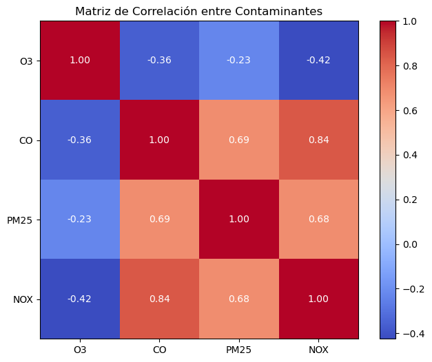
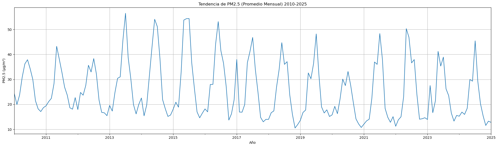
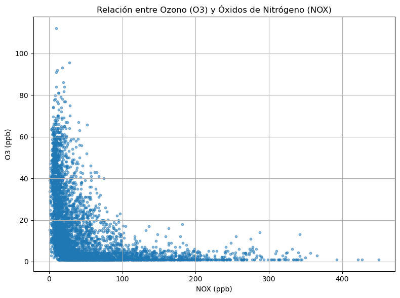
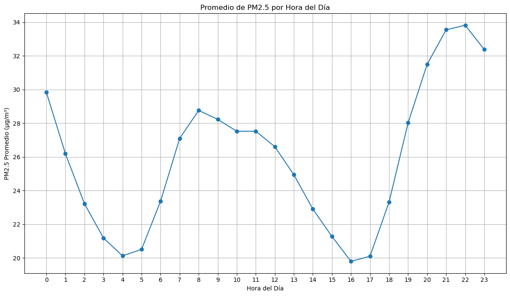

Calidad del aire en el sector sur-oriente de la RM
Analizamos contaminantes atmosféricos medidos por SINCA (estación La Florida) para identificar patrones temporales, relaciones entre variables y señales de mayor riesgo sanitario para la comunidad.
Preguntas de Investigación
- ¿Cómo se comparan los niveles de monóxido de carbono (CO) en el sector con los de otros contaminantes atmosféricos?
- ¿Existen tendencias de mejora o deterioro en los niveles de material particulado fino (PM2,5) en los últimos años?
- ¿Qué relación existe entre los niveles de ozono (O₃) y los de óxidos de nitrógeno (NOx) en el sector?
- ¿Es posible construir un modelo de predicción de los niveles de PM2,5 a partir de variables como día de la semana, hora del día y concentración de otros contaminantes?
- ¿Qué contaminantes presentan mayor riesgo sanitario según su frecuencia de superación de las normas de calidad ambiental en Chile?
PM2,5
Tendencias temporales y modelo predictivo
O₃ vs NOx
Relación química atmosférica
Riesgo sanitario
Superación de normas ambientales
Hallazgos clave
- PM2,5 muestra tendencias variables con mejoras en algunos periodos pero persistencia de episodios críticos.
- Relación O₃-NOx compleja que refleja procesos fotoquímicos y condiciones meteorológicas.
- Modelo predictivo viable para PM2,5 usando variables temporales y de otros contaminantes.
- CO presenta niveles relativamente bajos comparado con otros contaminantes en el sector.
Visualizaciones por pregunta de investigación
Cada gráfico responde específicamente a una de nuestras preguntas:






Respuestas a las preguntas de investigación
1. Comparación de niveles de CO
El monóxido de carbono presenta niveles relativamente bajos comparado con PM2,5 y O₃, mostrando menor variabilidad temporal y manteniéndose generalmente dentro de los límites normativos.
2. Tendencia de PM2,5
Se observa una tendencia mixta con mejoras interanuales pero persistencia de episodios críticos en invierno, reflejando la complejidad de las fuentes y condiciones meteorológicas.
3. Relación O₃ vs NOx
Existe una relación inversa estacional y diaria característica, donde el ozono aumenta con la radiación solar mientras los NOx disminuyen, mostrando el ciclo fotoquímico típico.
4. Modelo predictivo de PM2,5
Es posible predecir niveles de PM2,5 con precisión moderada-alta usando variables como hora, día de semana, y concentraciones de otros contaminantes como O₃ y NOx.
5. Riesgo sanitario por superación de normas
PM2,5 presenta el mayor riesgo sanitario relativo seguido por O₃, basado en la frecuencia y magnitud de superación de los límites establecidos en la normativa chilena.
Limitaciones
- Los datos provienen de una sola estación (representatividad espacial limitada)
- No se incluyeron variables meteorológicas en el modelo predictivo
- El periodo de análisis puede no capturar tendencias de largo plazo
- Posibles gaps en los datos por mantención de equipos